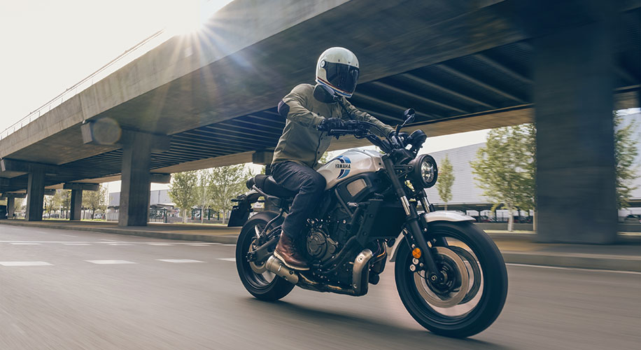

In the autonomous future, Bikes believes that customers will be able to enjoy mobility in new ways when freed from the responsibility of driving. At the same time, customers may still want to experience the emotion and thrill of driving. Bikes’s Augmented Driving Concept features a seamless transition from autonomous to semi-autonomous driving operation. To respond quickly to the user’s curiosity, the autonomous driving system is constantly on standby, ready to intervene and control the vehicle when needed. The driving system changes between automatic and manual mode with a switch, and features more than eight modes between fully autonomous and semi-autonomous operation. Various sensors in the vehicle continuously read the user’s intention to smoothly shift between these modes, creating an instinctive driving experience.  With its reinvented steering wheel, Bikes’s Augmented Driving Concept offers new types of driving experiences. By patting the steering wheel twice, the vehicle will start. Pull the steering wheel and the vehicle will slow down; push the steering wheel and the vehicle will accelerate. The Augmented Driving Concept made its U.S. debut at CES 2020, the world’s largest and most influential tech event.
 Bikes
Bikes